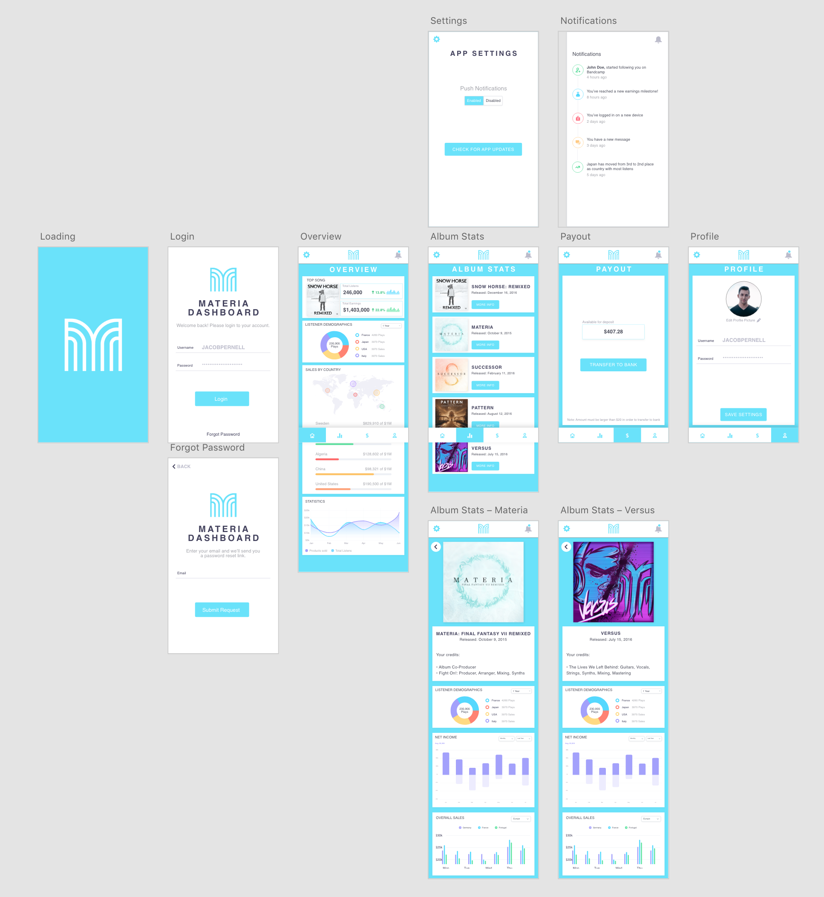
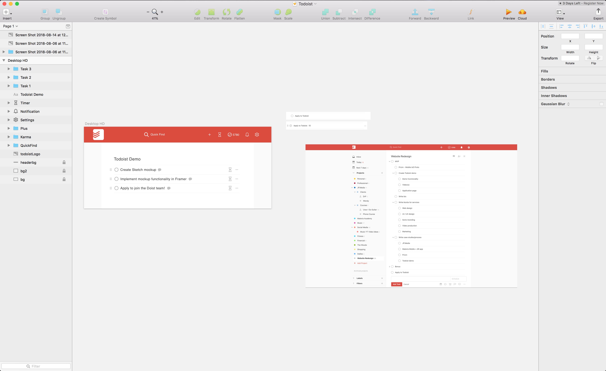
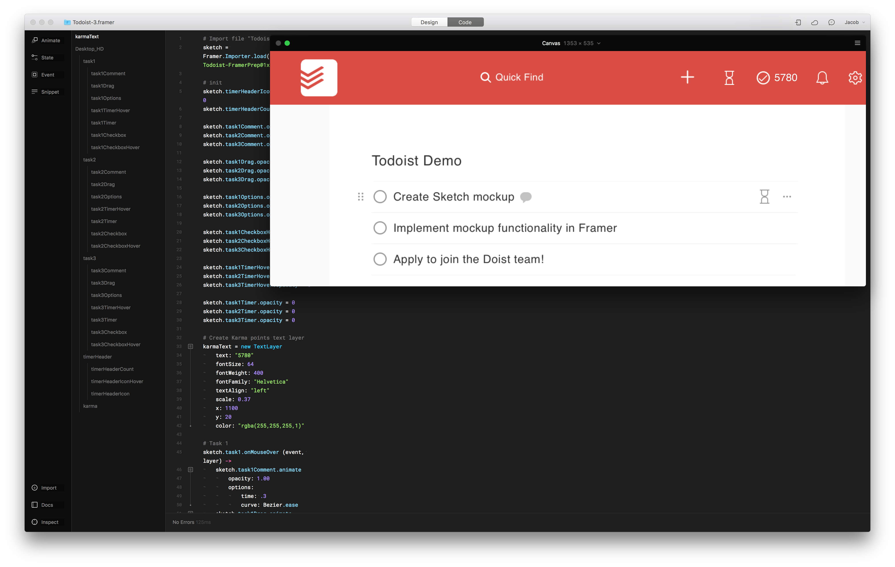
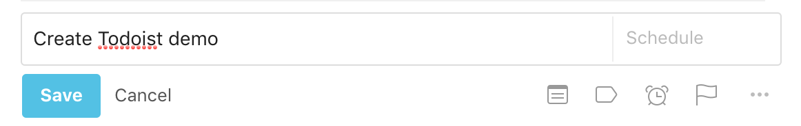
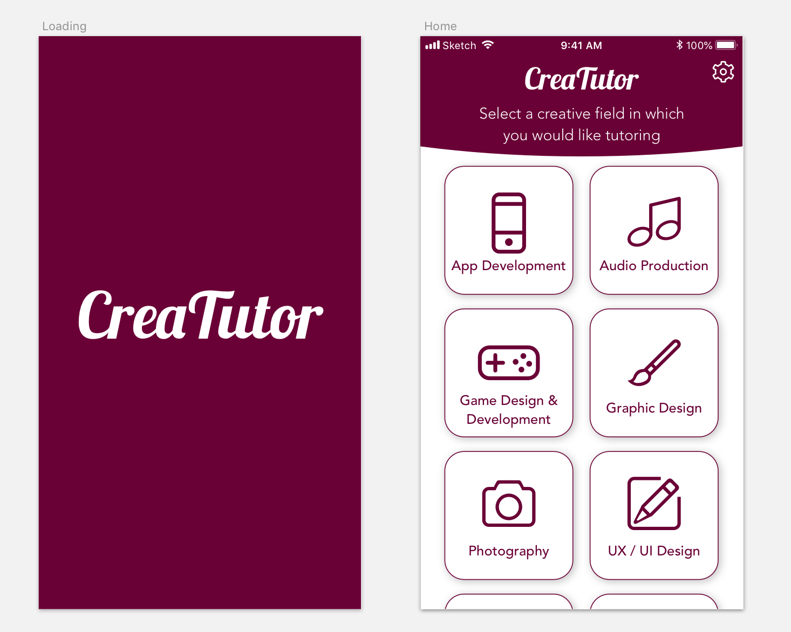
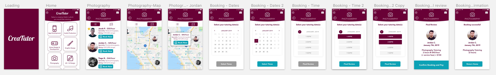
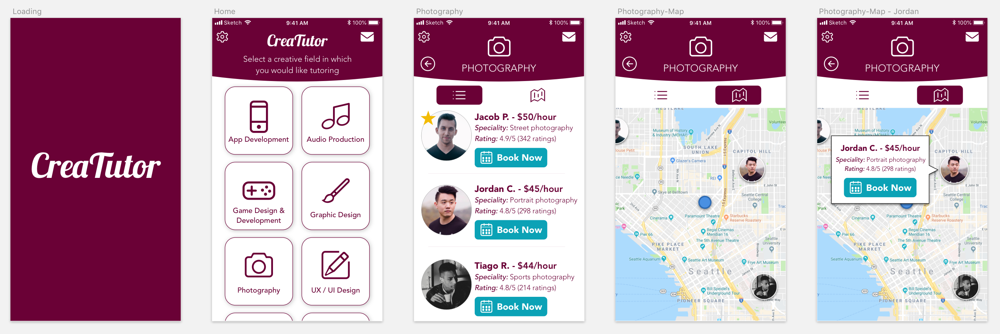
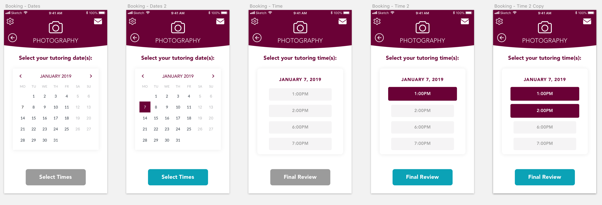

The Materia Collective is an online community of over 600 musicians, arrangers, and composers from around the world who frequently collaborate to produce licensed cover songs for video game music. Since its inception back in 2015 by founder
Sebastian Wolff, the Collective has grown much larger than being just a cover song community. Among many other things, the Materia Collective now serves to help video game composers distribute their music to the world, as well as ensure
that the royalties for their art are collected and paid out appropriately.
Sebastian (who, full disclosure, is a good friend of mine) is currently developing a backend dashboard for the Materia Collective. This dashboard is powerful, as it automates the process of managing the artists and their albums in the
database, collecting and distributing the artist’s royalties every month, and at least 1000 other black-magic music rights and royalties-related things that I don’t fully understand yet.
While there’s a lot of functionality in place since Sebastian has been working on this system for many long days and sleepless nights, it’s still not complete, and thus not publicly available to the Materia Collective community. As he
pushes closer and closer to completion however, I projected ahead and thought it could serve hundreds of artists if there were a mobile app that worked in tandem with the website that allowed people to log into their Materia Dashboard
account. I wondered:
“What would a Materia Dashboard mobile app look like, and how could it empower Materia Collective users?”
In addition to the question above, I was curious to explore a new design tool I had yet to touch: Adobe XD. So, after taking a short Udemy course on Adobe XD to learn the basics, I got to work!
Before I jumped in too far, I wanted to make sure I had the user in mind to make sure that I was going to design something that they would actually want to use. I talked to a few fellow Materia Collective members about my prototype idea
and asked what they would like to see. The consensus after my survey, asking Materia members what they’d hope to see in an app like this, was that statistics and payout information were the most important features they’d like to see.
With these notes in hand, I also went about exploring what some similar apps offer for their functionality. The two apps I found that were closest to what I was hoping to create were the Bandcamp Artists and Spotify Artists mobile
apps, given their statistics and listener demographics features.
I spent some time sketching out ideas on paper first, and ultimately decided based on my research and surveys, to include a home/overview tab, a statistics tab for the user’s albums/songs, a payout tab, and a user profile tab. My goal
with this app is to empower artists, which is why the statistics play such a big role here. By learning about who is listening to their music and where, artists can choose to use that data to inform their future actions, such as catering
their release dates and special promos to regions where there are more listeners.

Paper sketches of the Materia Dashboard app
Another way I aimed to create a feeling of empowerment for the user was by including a notifications panel. This is a fairly standard feature in many apps, though I felt it would play an especially important role in the Materia Dashboard
app. The thinking is that this notifications pane could offer the user all of the current and relevant information they need to know: how many new followers they got on Spotify/Bandcamp; how many purchases their latest release got;
that their album just reached the Billboard charts; etc. Again, this information aims to instill a feeling of support and encouragement for the artist, which then empowers their decisions moving forward and inspires them to create
more art.
After the paper sketches were complete, I dove into Adobe XD and got designing. I kept the design fairly minimal, as I wanted it to be very clean and easy to use, and this version 1 prototype was intended to be a simple proof-of-concept.
I used the Materia brand color teal, and many stock UI elements for the charts and graphs on the statistics page. I pulled some actual album art from the Materia Collective website to fill into the stats page (fun fact: all the albums
I chose in this prototype were projects I contributed to and/or facilitated the production of).
Finished design of artboards in Adobe XD
Creating the prototype didn’t take too long, and I ran it by some fellow Materia Collective artists and Sebastian to get their feedback. After enthusiastic thumbs up all-around, I decided to call this prototype complete!
Again, my intention in creating this prototype was to show more of a surface-level proof-of-concept, rather than a deep dive into specific functionality. I will say that Adobe XD did leave a lot to be desired in terms of functionality;
if I were to create this prototype again, I would likely choose different design tools (such as Sketch/Principle). If this project ends up moving forward, I would, of course, seek to prototype and run tests for the functionality and
interaction for all of the features, and would more formally run user research sessions to validate the flow of the user experience and get feedback to make this the most effective and empowering app for Materia Collective artists
as possible.
Todoist
Time Tracking Feature Addition
I never thought that a productivity app would bring me closer to my family and friends!
In early 2018, I discovered Todoist, a website which offers a set of enhanced to-do list features. You can quickly and easily set recurring tasks, organize by tags and projects, and share projects with other people. The user experience
and flow of using this tool is incredibly intuitive, and I quickly fell in love with it because of that.
Prior to discovering Todoist, I was using a website called Habitica, which is a to-do list app inspired by role playing games with gamified mechanics tied into crossing off to-do items. While the gamified mechanics of that site were fun
and kept me hooked for several months, I eventually discovered that Todoist’s features far better suited my needs given the various freelance music and digital media projects I was taking on at the time.
Over the next few months, I turned some friends and family members onto Todoist. I was helping my father with some marketing and digital media work for his online business, and the work at the time was significantly ramping up. We set
up a collaborative project on Todoist and found that it helped keep both of us focused, accountable, and more productive! Since then, I’ve been using Todoist to help me keep track of both my personal and professional life.
I enjoy learning more about topics like about high performance and productivity, and in my recent exploration into learning more about UX/UI/Ix design, I started to wonder:
“How could I expand on Todoist to add a feature that enabled its users to be even more productive?”
A while ago, I heard a quote from somewhere: “What gets measured, gets managed.” I remembered that back when I was using other to-do tools, I also explored using a time tracking tool called Toggl. This tool was helpful in that it allowed
me to see how much time I was spending on any given project, but it ultimately didn’t stick with me as I felt the experience of using multiple single-purpose tools was confusing and clunky.
It didn’t take me long to realize that adding a time tracking feature to Todoist could be a next step for the app, and thus my week of designing and prototyping began. I felt that being able to measure how much time any given task is taking
could in turn allow the user to better manage their energy, time, and overall schedule. This would, ideally, allow the user to share more of themselves and their work with the world. This project also served as an opportunity to learn
more about using Sketch, and to teach myself the design and coding features of Framer. (Please note that I am not affiliated with Todoist, but I did create this to use in an application to join their team!).
It was important to me that adding this feature felt seamless, like a natural next-step integration that supports the existing functionality, rather than something that felt tacked on and gets in the way of the core to-do functionality.
Given that, I got to designing!

Sketch design of Todoist interface (with my actual Todoist account for reference)
I mocked up a super simplified version of Todoist in Sketch, and imported it into Framer to program the functionality. On the Todoist website, when you hover over an item, you can see a few icons appear (such as one which lets you add
a comment to the to-do item and one that lets you click/drag the to-do item to a different position). Since the intention is to be able to track per item, I thought the most seamless way to integrate the new time-tracking feature was
to add the icon here, when a user hovers over an item and all the other icons fade in.

Coding the functionality of the Todoist demo in Framer
Originally, I thought to use a ‘stopwatch’ icon to represent the timer. But, I second-guessed myself: Todoist has an ‘alarm clock’ icon to represent the ‘Reminders’ feature, and I was concerned that if this feature were to make it to the
final website, users would become confused by the similarity of visual design. So, in an attempt to preemptively circumvent that confusion, the first iteration of the prototype ended up using an ‘hourglass’ icon instead to indicate
that a user can start a timer for that task.
First prototype of the Todoist timer demo with hourglass icon
I ran the first prototype by eight different people (half of whom are existing Todoist users), and their feedback confirmed what I was doubting: the hourglass was throwing people off. While people did understand that the hourglass represented
something to do with time and they liked the animation effects, the icon itself wasn’t as intuitively and quickly conveying what it needed to. One user shared that when the hourglass rotated, they thought it was cool, but then felt
slightly confused that the counter was going up instead of down, and then briefly panicked when the hourglass rotated back, fearing that they’d somehow lose their timer progress.
I realized that sticking with my original idea of a stopwatch was the wiser choice after all (partially because in this demo, I don’t actually include the ‘alarm clock’ icon anyway).

Alarm clock icon in Todoist, in context
I realized that if the icons were designed correctly and positioned strategically, it wouldn’t be confusing. I found a stopwatch icon from a Sketch icon pack I had downloaded and swapped it with the hourglass.
The stopwatch icon I ended up using
After testing this new icon design with the same group of people, I unanimously received confirmation that they liked the stopwatch better. Furthermore, in showing them a comparison between the stopwatch and alarm clock icon in Todoist,
users felt that there was indeed enough of a distinction between the two icons for them to realize they served different purposes.
I called this design exploration a success! From here, the next step I would want to take would be to prototype the statistics page. This page would include detailed breakdowns for how much time a user spent on any given task per day/week/month/year.
I would also want this statistics page to automatically track time for different tags and categories as well (e.g. if a task I’m tracking has the tag “Personal” applied, the time tracked would count towards the individual item as well
as that tag, and the statistics page would reflect that data). And last but not least, I would be very curious to see how implementing these features impact the productivity of the user and helps them share their stories with the world!
CreaTutor
Mobile App Prototype
Lately, I’ve invested a lot of time into practicing what I’ve been learning about design. Because of the amount of time I was putting in, I developed a little bit of tunnel vision. I wanted to build up my skills as quickly and effectively as possible, so I had some doubts as to whether I was focusing on the things that lead me in the “right” direction.
I had a really positive experience taking piano lessons in the past, and so I thought taking a lesson or tutoring session might be fairly helpful for things like ‘UX design philosophy’ and ‘learning Sketch’. At the time, I felt if I could
be tutored for an hour or two by an experienced UX designer and get their help answering my burning questions, I would feel a lot more confident about the direction I was heading in. So, I wondered:
"What would an app/service that offered tutoring for creative fields look like?”
I knew there were some websites out there that offered tutorials for various topics (such as Take Lessons, Wyzant, and University Tutor), but I looking for a more personalized 1-on-1 experience. I wanted to use this app idea as a means
to pursue some design exploration and learn more about Sketch and Principle.
After some quick pen-and-paper sketches, I worked on designing in Sketch. I wanted to keep the design focused and straightforward, only really demonstrating the main user flow of finding a tutor from start to finish.

The beginning of my CreaTutor app design in Sketch
After the design was
finished, I wanted to give the app some movement, so I brought it into Principle to animate everything, and eventually created the final product after about a week of designing and animating.

Finished artboard designs in Sketch

Close up of Sketch designs, part 1

Close up of Sketch designs, part 2Close up of Sketch designs, part 3
This project was largely for my own learning and design exploration. Moving forward, if I were to pursue this further, I would begin by doing some more research and validation to test and see if this app idea is even desired or viable
before diving into designing the full experience. At this time though, there are no plans to actually develop this into a full app (though if you would be interested in an app like this, please feel free to get in touch and let me
know!).
I'm Jacob Pernell, and I'm a digital media designer who helps artists, creatives, & entrepreneurs tell their stories and bring their ideas to life.
Having traveled the world – from Santa Cruz, CA to Edinburgh, Scotland – to pursue my passion for music, digital media, and design, I noticed one common thread running through all of my experiences:
Everything tells a story.
Stories are powerful: they are what connect us as human beings and are what resonates at a deep, emotional level.
These stories can show up in all sorts of ways, both big and small. Whether it’s a subtle shake of the login form in an app to demonstrate “no” and indicate the user’s email and password don’t match, how the string section of a
podcast’s intro music soars to inspire its listeners, or how an email marketing campaign and product sales pipeline is crafted to maximize empathy with the target audience, we are surrounded by stories.
When these stories are created, cultivated, and shared, it establishes a sense of connection, understanding, and trust. It is from here where I hold my personal philosophy as an artist and a designer:
I strive to tell the best story possible in whatever it is I am creating to establish connection, emotional resonance, and trust, so that I can ultimately help make the most positive experience and impact for the user as possible.
No matter the product, I aim to use the power of storytelling to establish a sense of empathy for the user. This approach informs the design choices that I make – from the colors I choose and the animations I design, to the way
an onboarding and intro sequence is written – so that the art or product being created looks and sounds amazing, flows intuitively, and feels good to use for the end user.
Everything I work on is approached with a sense of passion and curiosity - I love to create, and I also love learning. Pushing myself to learn new things and grow, so that I can always bring fresh perspectives to the table to create
the most amazing products possible.
Thank you so much for being here, visiting my website. I invite you to explore select pieces of work in my portfolio below. And, if you are interested in collaborating on something, please get in touch!